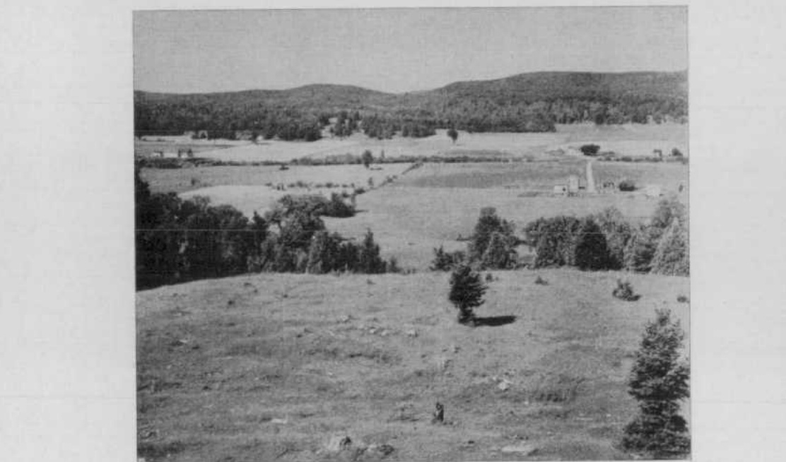
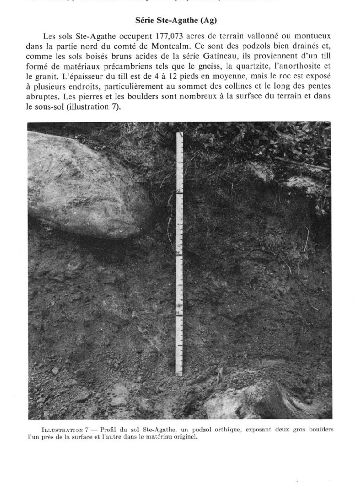
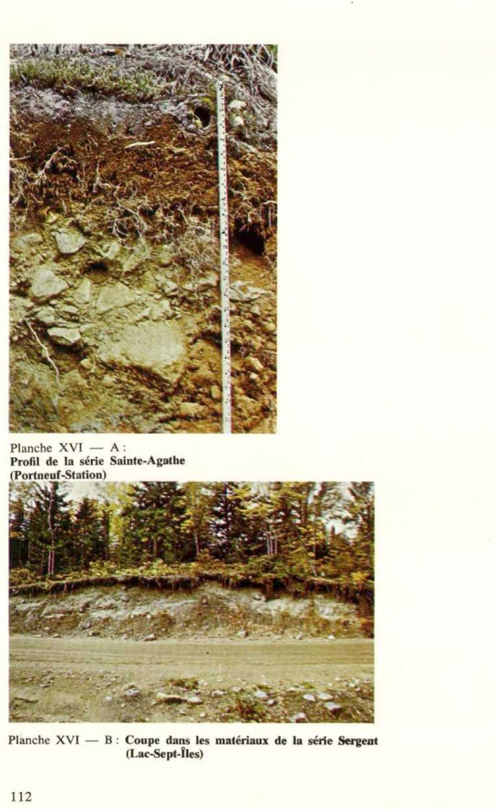
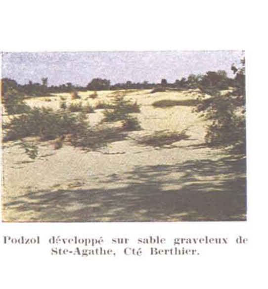

Identification & Caractéristiques Générales
La série Sainte-Agathe se développe sur un till morainique à texture de loam sableux, d'une épaisseur variant généralement de 1,2 à 3,6 mètres, reposant sur le substrat rocheux précambrien de la Province tectonique de Grenville. Ce matériau parental dérive principalement de la désagrégation de roches ignées et métamorphiques, notamment des gneiss, granits, gabbros, quartzites et anorthosites. Sur le plan géomorphologique, ces sols occupent des paysages caractérisés par un relief vallonné à montueux, localisés à des altitudes élevées et ponctués d'affleurements rocheux fréquents aux sommets des collines ainsi que le long des pentes abruptes.
Sur le plan morphologique et hydropédologique, le profil présente un drainage naturel généralement bon, associé à un ruissellement de surface rapide. Le solum possède une perméabilité interne modérée à rapide et une capacité de rétention en eau moyenne, tandis que le matériau originel sous-jacent présente une compacité et une compacité relative plus élevées qui restreignent l'infiltration profonde. La fraction minérale superficielle et profonde contient une proportion importante de pierres et de blocs erratiques (boulders). Chimiquement, ces profils présentent une réaction fortement acide, caractéristique des sols soumis à une podzolisation active sous couvert forestier boréal ou mixte dominé par l'érable à sucre, le bouleau jaune, le hêtre, le sapin baumier et l'épinette.
Les aptitudes agronomiques de la série Sainte-Agathe sont fortement restreintes par la topographie accidentée, la pierrosité abondante et la faible profondeur effective par endroits. En raison de ces contraintes physiques et des risques élevés d'érosion hydrique sur les pentes lorsque le couvert végétal est absent, la majeure partie de ces superficies demeure sous couvert forestier. Les secteurs défrichés sont principalement affectés à la production de cultures fourragères extensives ou aux pâturages. La mise en valeur agricole requiert des pratiques rigoureuses de conservation des sols, incluant le maintien d'une couverture végétale permanente, le chaulage correctif pour neutraliser l'acidité naturelle et l'épierrage mécanique là où la topographie le permet.
Caractères Distinctifs & Morphologie Génétique (Comté de Portneuf — Page 9)
- Selon la systématique canadienne des sols (1970) ceux-ci ont été classés en divers grands-groupes et représentés sur la carte à un niveau de classification qui permet de tenir compte à la fois et du développement et des caractères des différents matériaux originels : c'est la série avec ses différents types de sols. Les principaux grands-groupes reconnus et les séries qui les représentent dans le comté de Portneuf sont : 1) le luvisol gris : série Saint-Laurent ; 2) le podzol ferro-humique : séries Sergent et Matambin ; 3) le podzol humo-ferrique : séries Brébeuf, Ivry, Mont-Rolland, Morin, Pont-Rouge, Saint-Antoine, Saint-Faustin, Saint-Raymond, Saint-Thomas, Sainte-Agathe, Sorel, Tilly, Batiscan, Uplands, Achigan, Bevin, Deligny, Saint-Jude ; 4) le brunisol mélanique : série Saint-Bernard ; 5) le brunisol dystrique : séries Cap-Santé, Pontiac, Chicot ; 6) le régosol : Chapeau, Lachute et alluvions récentes non-différenciées ; 7) le gleysol humique : séries Botreaux, Brandon, Chaloupe, McDonald, Neuville, Platon, Saint-Louis, Saint-Samuel, Sainte-Rosalie, Terrebonne, Champlain, Vaudreuil ; 8) le gleysol : séries Dalhousie, Joly, Grondines, Rideau ; 9) le fibrisol : sols organiques peu décomposés ; 10) le mésisol : sols organiques semi-décomposés ; 11) le humisol : sols organiques bien décomposés. Certains sols n'ont pas été différenciés selon les critères de séries, ce sont les terrains Farmington et Saint-Colomban, et d'autres ont un caractère particulier, ce sont les éboulis, les savanes et les marécages et, le pavage de cailloux. Enfin, les non-sols, ainsi appelés à cause d'un matériel trop mince sur roc ou l'apparition du roc lui-même à la surface ont été appelés les affleurements rocheux.
Classification Taxonomique & Environnement Pédologique
| Ordre Pédologique | Podzolique |
|---|---|
| Grand Groupe (SCSS) | Podzol ferro-humique |
| Sous-Groupe Taxonomique | Podzol ferro-humique orthique |
| Famille Pédologique | Loameuse-grossière, mixte sableux, acide |
| Mode de Dépôt Parental | Morainique |
| Classe de Drainage Naturel | Bien drainé |
| Régime Thermique & Humidité | Frais / Subhumide |
Description Morphologique du Profil Type
Séquences génétiques des horizons pédologiques caractérisant le profil type représentatif de la série Sainte-Agathe :
Profil naturel (vierge) — Comté de Champlain
✓ Source : Comté de Champlain — Page 59Couleur Munsell : 7.5YR 4/0
Structure & Consistance : Polyédrique à granulaire
Description morphologique : Débris de matière organique (humus brut) peu décomposé gris foncé (7.5YR 4/0); pH : 4.6 - 5.0.
Couleur Munsell : Non précisée
Structure & Consistance : Polyédrique à granulaire
Description morphologique : Loam sableux gris pâle; pH : 4.8 - 5.2.
Couleur Munsell : 7.5YR 5/6
Structure & Consistance : Polyédrique à granulaire
Description morphologique : Loam sableux brun vif (7.5YR 5/6); très friable; caillouteux anguleux; pH : 5.5.
Couleur Munsell : 10YR 5/8
Structure & Consistance : Polyédrique à granulaire
Description morphologique : Loam sableux brun jaune à brun pâle (10YR 5/8 - 6/3) compact; pH : 5.6.
Couleur Munsell : 10YR 5/2
Structure & Consistance : Polyédrique à granulaire
Description morphologique : Loam sableux et graveleux brun gris (10YR 5/2); nombreux fragments de cailloux et de gravier; très compact; pH : 5.7.
Profil représentatif — Comté de Argenteuil
✓ Source : Comté de Argenteuil — Page 89Couleur Munsell : Non précisée
Structure & Consistance : Polyédrique à granulaire
Description morphologique : Terre franche organique noire; racines; miettes fines; très friable; pH 4.0-4.6.
Couleur Munsell : Non précisée
Structure & Consistance : Polyédrique à granulaire
Description morphologique : Terre franche sableuse fine à terre franche lessivée gris pâle; très friable; pH 4.6-5.2.
Couleur Munsell : Non précisée
Structure & Consistance : Granuleuse fine très friable
Description morphologique : Terre franche à terre franche sableuse très fine, brune à brun rougeâtre clair; structure granuleuse fine très friable; quelques fragments de gravier; pH 5.0-5.4.
Couleur Munsell : Non précisée
Structure & Consistance : Granuleuse fine
Description morphologique : Terre franche sableuse brune à brun jaunâtre; contenant un peu de gravier et de pierres; structure granuleuse fine; friable; pH 5.0-5.4.
Couleur Munsell : Non précisée
Structure & Consistance : Polyédrique à granulaire
Description morphologique : Terre franche sablo-graveleuse brun jaunâtre pâle à gris brunâtre pâle; mouchetée de gris et de rouille; très ferme à compacte; se brisant en fragments irréguliers; pH 5.2-5.6.
Couleur Munsell : Non précisée
Structure & Consistance : Polyédrique à granulaire
Description morphologique : Till de terre franche sablo-graveleuse gris brunâtre à gris ou gris olive; contenant beaucoup de pierres; ferme à compact; se brisant en fragments irréguliers; pH 5.4-6.0.
Profil naturel (vierge) — Comté de Hull
✓ Source : Comté de Hull — Page 35Couleur Munsell : Non précisée
Structure & Consistance : Grumeleuse fine
Description morphologique : Matière organique brun très foncé et racines; structure grumeleuse fine; très friable et perméable; pH 4.0 à 4.6.
Couleur Munsell : Non précisée
Structure & Consistance : Polyédrique à granulaire
Description morphologique : Loam sableux fin à loam gris pâle, éluvié; très friable et perméable; pH 4.6 à 5.2.
Profil forestier / boisé — Comté de Hull
✓ Source : Comté de Hull — Page 36Couleur Munsell : Non précisée
Structure & Consistance : Granuleuse fine et monogranulaire
Description morphologique : Loam sableux fin, brun rougeâtre à brun; structure granuleuse fine et monogranulaire; très friable et perméable; quelques fragments graveleux; pH 5.0 à 5.4.
Couleur Munsell : Non précisée
Structure & Consistance : Polyédrique à granulaire
Description morphologique : Loam sableux brun à brun jaunâtre; un peu de gravier et quelques pierres; quelques fins agrégats granuleux et polyédriques parmi la masse monogranulaire; très friable et perinéable; pH 5.0 à 5.4.
Couleur Munsell : Non précisée
Structure & Consistance : Polyédrique à granulaire
Description morphologique : Loam sableux à loam sablo-graveleux brun jaunâtre pâle à gris brunâtre pâle, avec taches de gris et brun jaunâtre; till très ferme à compact, se brisant en fragments irréguliers; pH 5.2 à 5.6.
Couleur Munsell : Non précisée
Structure & Consistance : Polyédrique à granulaire
Description morphologique : Till de loam sablo-graveleux à loam sableux, gris brunâtre à gris ou gris olive, contenant des pierres et se brisant en fragments irréguliers; ferme à compact; pH 5.4 à 6.0. Les pierres et les fragments graveleux sont plus abondants dans la partie inférieure que dans la partie supérieure du solum.
Profil naturel (vierge) — Comté de L'assomption
✓ Source : Comté de L'assomption — Page 29Couleur Munsell : 10YR 2/2
Structure & Consistance : Polyédrique à granulaire
Description morphologique : Humus brut, brun très foncé (10YR 2/2); pH 4.6-5.2.
Couleur Munsell : 7.5YR 7/2
Structure & Consistance : Polyédrique à granulaire
Description morphologique : Loam sableux fin, gris rosâtre (7.5YR 7/2); très friable et très perméable; pH 4.6-6.2.
Couleur Munsell : 5YR 4/8
Structure & Consistance : Polyédrique à granulaire
Description morphologique : Loam sableux rouge jaunâtre (5YR 4/8) à brun rougeâtre; très fins granules parmi les particules de sable; très friable et perméable; fragments graveleux, pierres et boulders; pH 5.0-5.4.
Couleur Munsell : 10YR 5/6
Structure & Consistance : Polyédrique à granulaire
Description morphologique : Loam sableux brun vif à brun jaunâtre (7.5YR-10YR 5/6); autres caractéristiques comme dans l'horizon Bfh.
Couleur Munsell : 10YR 5/3
Structure & Consistance : Polyédrique à granulaire
Description morphologique : Loam sableux brun à brun pâle (10YR 5/3-6/3) formant la transition du solum au matériau originel.
Couleur Munsell : 10YR 6/2, 2.5YR 5/2
Structure & Consistance : Polyédrique à granulaire
Description morphologique : Till de loam sableux gris brunâtre à brun grisâtre (10YR 6/2-2.5YR 5/2); nombreux fragments graveleux, pierres ou boulders; ferme à assez compact; pH 5.4 à 6.7.
Profil forestier / boisé — Comté de L'assomption
✓ Source : Comté de L'assomption — Page 30Couleur Munsell : Non précisée
Structure & Consistance : Polyédrique à granulaire
Description morphologique : Humus brut, brun très foncé.
Couleur Munsell : Non précisée
Structure & Consistance : Polyédrique à granulaire
Description morphologique : Loam sableux gris brunâtre pâle, très friable et perméable.
Couleur Munsell : Non précisée
Structure & Consistance : Particulaire
Description morphologique : Loam sableux brun rougeâtre contenant une forte proportion de pierres et de fragments graveleux; structure particulaire; excessivement perméable.
Couleur Munsell : Non précisée
Structure & Consistance : Particulaire
Description morphologique : Loam sableux à loam sablo-graveleux, brun jaunâtre; beaucoup de fragments rocheux, angulaires; structure particulaire; excessivement perméable.
Couleur Munsell : Non précisée
Structure & Consistance : Polyédrique à granulaire
Description morphologique : Till de loam sablo-graveleux, brun jaunâtre pâle à gris brunâtre pâle.
Profil forestier / boisé — Comté de Portneuf
✓ Source : Comté de Portneuf — Page 116Couleur Munsell : 10YR 4/1, 10YR 2/1
Structure & Consistance : Polyédrique à granulaire
Description morphologique : Matière organique à demi-décomposée, noire à brun très foncé (10YR 2/1 à 2/2 h), gris foncé (10YR 4/1 s); très friable; racines très abondantes, moyennes, obliques, exo-agrégats; racines abondantes, fines à microscopiques, non-orientées, exo-agrégats; limite distincte, régulière; pH : 4.8.
Couleur Munsell : 10YR 6/1, 7.5YR 7/2
Structure & Consistance : Polyédrique à granulaire
Description morphologique : Sable grossier loameux caillouteux gris (10YR 6/1 h), gris-rose (7.5YR 7/2 s); particulaire; meuble; racines abondantes, fines à microscopiques, non-orientées, exo-agrégats; limite abrupte, interrompue; pH : 4.6.
Couleur Munsell : 2.5YR 3/6, 5YR 5/6
Structure & Consistance : Polyédrique à granulaire
Description morphologique : Loam sableux caillouteux rouge foncé (2.5YR 3/6 h), rouge-jaune (5YR 5/6 s); particulaire; très friable; racines abondantes, fines à microscopiques, non-orientées, exo-agrégats; limite graduelle, ondulée; pH : 4.8.
Couleur Munsell : 10YR 5/6, 10YR 6/3
Structure & Consistance : Polyédrique à granulaire
Description morphologique : Loam sableux caillouteux brun-jaune (10YR 5/6 h), brun pâle (10YR 6/3 s); particulaire; très friable; racines très abondantes, grossières, obliques, exo-agrégats; racines peu abondantes, très fines et microscopiques, verticales, exo-agrégats; limite graduelle, régulière; pH : 5.1.
Couleur Munsell : 5Y 5/3, 5Y 7/2, 2.5Y 5/4
Structure & Consistance : Polyédrique à granulaire
Description morphologique : Loam sableux très graveleux olive (5Y 5/3 h), gris clair (5Y 7/2 s); taches olive clair (2.5Y 5/4 h) assez nombreuses, petites, distinctes; massive; très ferme; fragments de roches; pH : 5.5.*
Profil forestier / boisé — Comté de Portneuf
✓ Source : Comté de Portneuf — Page 117Couleur Munsell : 10YR 2/2, 7.5YR 3/0
Structure & Consistance : Polyédrique à granulaire
Description morphologique : Matière organique à demi-décomposée, gris très foncé à gris foncé (7.5YR 3/0 à 4/0 h), brun très foncé (10YR 2/2 s); racines abondantes, grossières, obliques, exo-agrégats; racines très abondantes, fines à microscopiques, non-orientées, exo-agrégats; limite abrupte, régulière; pH : 4.5.
Couleur Munsell : 7.5YR 5/2
Structure & Consistance : Polyédrique à granulaire
Description morphologique : Sable grossier loameux graveleux brun (7.5YR 5/2 h); particulaire; meuble; racines abondantes, moyennes, obliques, exo-agrégats; racines très abondantes, fines à microscopiques, verticales, exo-agrégats; gravier (20%) arrondi à sub-arrondi; limite abrupte, interrompue; pH : 5.1.
Couleur Munsell : 7.5YR 5/6
Structure & Consistance : Polyédrique à granulaire
Description morphologique : Sable grossier loameux très graveleux brun vif (7.5YR 5/6 s); particulaire; meuble; racines peu abondantes, moyennes, obliques, exo-agrégats; racines très abondantes, très fines et microscopiques, exo-agrégats; gravier (50%) arrondi à sub-arrondi; limite abrupte, ondulée; pH : 4.9.
Couleur Munsell : 10YR 6/6, 10YR 7/4
Structure & Consistance : Polyédrique à granulaire
Description morphologique : Sable grossier très graveleux jaune-brun (10YR 6/6 h), brun très pâle (10YR 7/4 s); particulaire; meuble; racines peu abondantes, très fines et microscopiques, verticales, exo-agrégats; gravier (50%) arrondi à sub-arrondi; limite distincte, ondulée; pH : 5.0.
Couleur Munsell : 10YR 5/2, 10YR 6/2
Structure & Consistance : Polyédrique à granulaire
Description morphologique : Sable loameux graveleux, pierreux et caillouteux brun-gris (10YR 5/2 h), gris-brun clair (10YR 6/2 s); particulaire; ferme; gravier, cailloux, pierres (20%), arrondis à sub-arrondis; pH : 5.1.
Profil forestier / boisé — Comté de Trois-rivières
✓ Source : Comté de Trois-rivières — Page 64Couleur Munsell : 10YR 2/2
Structure & Consistance : Polyédrique à granulaire
Description morphologique : Débris organiques, brun très foncé (10YR 2/2); pH : 4.8.
Couleur Munsell : 7.5YR 7/2
Structure & Consistance : Polyédrique à granulaire
Description morphologique : Loam sableux fin, gris rosâtre (7.5YR 7/2).
Couleur Munsell : 10YR 5/2
Structure & Consistance : Granulaire
Description morphologique : Loam sablo-caillouteux, gris brun (10YR 5/2), structure granulaire, friable; pH : 5.3.
Couleur Munsell : 7.5Y 4/4, 10YR 5/1
Structure & Consistance : Granulaire
Description morphologique : Loam sablo-caillouteux, brun foncé (7.5Y 4/4) à brun jaune (10YR 5/1), structure granulaire, friable; pH : 5.5.
Couleur Munsell : 10YR 6/2
Structure & Consistance : Polyédrique à granulaire
Description morphologique : Till de loam sableux gris brunâtre (10YR 6/2); pH : 5.7.
Profil représentatif — Comté de Berthier
✓ Source : Comté de Berthier — Page 100Couleur Munsell : Non précisée
Structure & Consistance : Granulaire
Description morphologique : Mélange de matière organique mal décomposée et de loam sableux, structure granulaire, friable. pH: 4.9.
Couleur Munsell : 5YR 6/2
Structure & Consistance : Polyédrique à granulaire
Description morphologique : Sable limoneux gris rose (5 YR 6/2), friable.
Couleur Munsell : 2.5YR 3/6
Structure & Consistance : Granuleuse à nuciforme
Description morphologique : Loam sablo-caillouteux rouge foncé (2.5 YR 3/6), structure granuleuse à nuciforme, friable. pH: 5.3.
Couleur Munsell : 5YR 5/8
Structure & Consistance : Polyédrique à granulaire
Description morphologique : Loam sablo-caillouteux, rouge jaune (5 YR 5/8), avec quelques nodules d'argile, consistance un peu compacte. pH: 5.4.
Couleur Munsell : 7.5YR 5/8, 10YR 5/8
Structure & Consistance : Fragmentaire
Description morphologique : Loam sableux à sable limono-graveleux, caillouteux, brun vif (7.5 YR 5/8) à brun jaune (10 YR 5/8), structure fragmentaire, consistance très compacte. pH: 5.4.
Couleur Munsell : 10YR 6/2, 10YR 5/1
Structure & Consistance : Polyédrique à granulaire
Description morphologique : Roche-mère: loam sablo-graveleux et caillouteux, gris brun clair (10 YR 6/2) à gris olive (10 YR 5/1), très compact. pH: 5.9.
Profils Photographiques & Planches de Terrain
Documents iconographiques, figures pédologiques et coupes de terrain documentées dans les mémoires d'inventaire pour de la série Sainte-Agathe :




Propriétés Physico-Chimiques & Analyses de Laboratoire
| Horizon | Prof. (pces/cm) | Sable % | Limon % | Argile % | pH | C % | N % | Ca éch. | Mg éch. | K éch. | H+ éch. | Bases tot. | C.E.C. (meq/100g) | Saturation % |
|---|---|---|---|---|---|---|---|---|---|---|---|---|---|---|
| L-H | 2-3 | 4.8 | 42.31 | 1.33 | 23.8 | 7.4 | 2.45 | 60.67 | 33.65 | 94.32 | 35.6 | |||
| Ae | 1-2 | 50.0 | 44.0 | 6.0 | 4.9 | 1.39 | 0.07 | 1.0 | 0.2 | 0.13 | 5.66 | 1.33 | 6.99 | 19.0 |
| Bf | 9 | 50.0 | 48.0 | 2.0 | 5.6 | 4.43 | 0.18 | 0.7 | 0.3 | 0.10 | 16.12 | 1.10 | 17.22 | 6.3 |
| Bfj | 8 | 56.0 | 40.0 | 4.0 | 5.8 | 0.61 | 0.03 | 0.1 | 0.1 | 0.08 | 2.11 | 0.28 | 2.39 | 11.7 |
| C | 76.0 | 23.0 | 1.0 | 6.1 | 0.17 | 0.01 | 0.1 | 0.1 | 0.05 | 0.00 | 0.23 | 0.23 | 100.0 |
Particularités Régionales, Phases & Variantes Pédologiques
Déclinaisons régionales, faciès texturaux, phases d'érosion ou de pierrosité et variantes cartographiées par étude pour de la série Sainte-Agathe :
| Étude Régionale | Symbole | Appellation / Phase / Variante | Différenciation avec la série type (Analyse pédologique) |
|---|---|---|---|
| Comté de Argenteuil | Ag |
Sainte-Agathe loam sableux fin | Modalité modale de référence (type de base de la série). |
| Comté de Berthier | Ag |
Sainte-Agathe loam sableux caillouteux | Conforme à la série type de référence (caractéristiques texturales et drainage identiques). |
| Comté de Champlain | Ag |
Sainte-Agathe loam sableux | Conforme à la série type de référence (caractéristiques texturales et drainage identiques). |
| Comté de Gatineau | Ag |
Sainte-Agathe loam sableux fin | Conforme à la série type de référence (caractéristiques texturales et drainage identiques). |
| Comté de Hull | Ag |
Sainte-Agathe loam sableux fin | Conforme à la série type de référence (caractéristiques texturales et drainage identiques). |
| Comté de Joliette | Ag |
Sainte-Agathe loam sablo-graveleux et caillouteux | Phase graveleuse à perméabilité accrue et réserve utile diminuée; Faciès loameux plus fin et équilibré que le loam sableux de référence (meilleure rétention en eau et nutriments). |
| Comté de L'assomption | Ag |
Sainte-Agathe loam sableux fin | Conforme à la série type de référence (caractéristiques texturales et drainage identiques). |
| Comté de Maskinongé | Ag |
Sainte-Agathe loam sableux caillouteux | Conforme à la série type de référence (caractéristiques texturales et drainage identiques). |
| Comté de Portneuf | Ag |
Sainte-Agathe sable à loam sableux caillouteux | Conforme à la série type de référence (caractéristiques texturales et drainage identiques). |
| Comté de Trois-rivières | Ag |
Sainte-Agathe loam sableux caillouteux | Conforme à la série type de référence (caractéristiques texturales et drainage identiques). |
Distribution Pédo-Paysagère & Représentativité Cartographique (Couverture PPS 2026)
- Gatineau loam sableux (GTU) — co-occurrente dans 550 polygone(s)
- Affleurements rocheux (ARR) — co-occurrente dans 208 polygone(s)
- Saint-Colomban loam sableux rocheux (SAO) — co-occurrente dans 204 polygone(s)
Aptitudes Agronomiques, Hydropédologie & Conservation des Sols
Indicateurs Hydropédologiques & Vulnérabilité à l'Érosion (BDHP 2026)
Interprétation BDHP : Potentiel de ruissellement modérément faible. Infiltration modérée avec textures moyennes à modérément grossières.
Classement selon l'Inventaire des Terres du Canada (ITC / CLI) : Classe 1.
- Potentiel agricole : Terroir adapté aux cultures régionales selon la texture dominante et la régie de drainage.
- Contraintes majeures : Bien drainé. Risque d'engorgement temporaire ou d'excès d'eau printanier.
- Gestion & Aménagement : Drainage souterrain ou superficiel préconisé sur les terres planes. Chaulage et apport organique régulier selon les bilans agronomiques.
- Cultures adaptées : Grandes cultures (maïs, soya, céréales), prairies fourragères et cultures maraîchères selon le contexte géomorphologique.